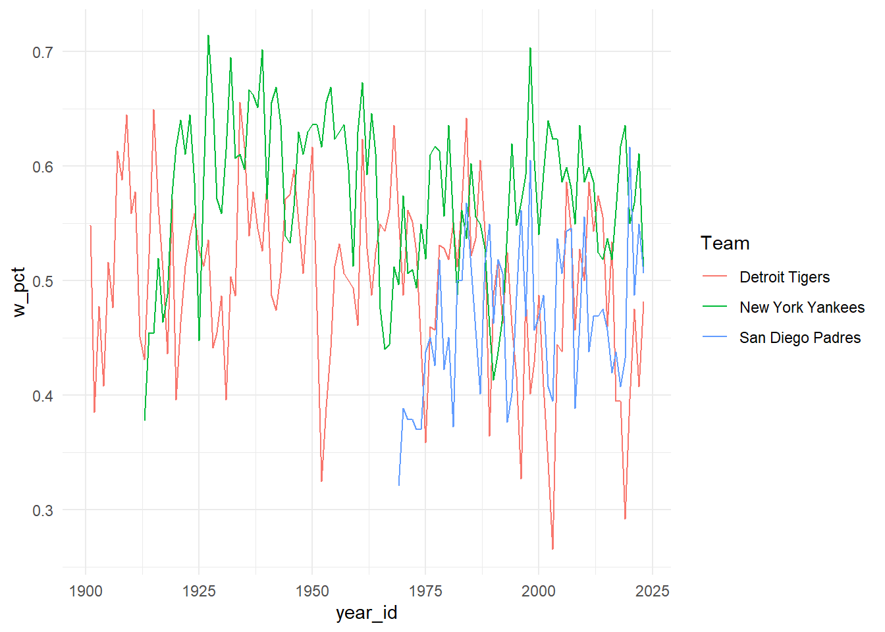

Homework 4
Create a RStudio Project on your machine
- Name the Project “hw_4”
- Within the Project create a folder for data and scripts.
- Download the following three datasets into the project data folder.
- sesame13.sav
- star.csv
- ais.xlsx
- Save a hw_4.qmd file in your scripts folder
Part 1
Install and load the package {Lahman}, which will give you access to the Teams data.
1. Produce a subset of the data (as a new object) that has the following characteristics:
- only one team (your choice)
- (try to you select a team that is currently still around, or it probably won’t be interesting; see a list of current teams).
- data from 1980 to present (or as current as the dataset allows)
- includes 5 columns:
name,yearID,W,L,R,RA. These 5 variables correspond to the team name, the year, wins, losses, runs scored, and runs allowed).
2. Create a new variable corresponding to the winning percentage for the team you chose over time:
\[w_{pct} = \frac{wins}{wins + losses}\]
- Order by winning percentage: Least to greatest
- Order by winning percentage: Greatest to least
- Compute the
meanandstandard deviationof winning percentage
3. With the full Teams data:
- Compute the
meanandstandard deviationof winning percentage for each team - Order by winning percentage, greatest to least
4. Use the full data to reproduce the plot below
Part 2
1. Read in the following three datasets, using {here} and the package of your choice ({rio}, {readr}, {haven}, {readxl})
- sesame13.sav
- star.csv
- ais.xlsx
Hint: For the ais.xlsx data, look at the skip argument within the {readxl} help documentation.
2. Using the ais data, compute the average red blood cell count and average bmi by sport. Output these data as SPSS (.sav) and EXCEL files.
3. Use the sesame data to answer the following question: Was the average female age higher in schools or at home?
4. First, how many rows and columns are in the star data? Next, remove outliers using a really poor method, just for practice, by eliminating students whose math (tmathss) scores were more than three standard deviations above or below the corresponding mean. How many rows are in the data now?
5. Use the star data to compute standardized math and reading scores; name these variables tmathss_z and treadss_z. To create standardized scores, for each variable (math and reading), subtract the mean from each observation and divide by the standard deviation: \(x_s = \frac{x_i - \bar{X}}{sd(X)}\).
- Check that your computations were correct by computing the mean and standard deviation of each variable (they should be 0 and 1, respectively).
- Compute the mean of the standardized variable for all
sex/frlcombinations. (I’m asking you to extend what you know here. We haven’t talked explicitly about how to do this yet, but you have seen examples). - What do you make of these findings? Do you see an effect by
sex? Anfrleffect (frlstands for free/reduced lunch, and is a rough proxy for household income)? Is there evidence of an interaction (i.e., that the effect offrlis greater for boys versus girls)?